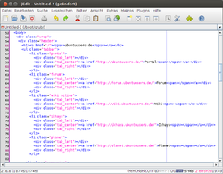

jEdit
Dieser Artikel wurde für die folgenden Ubuntu-Versionen getestet:
Ubuntu 16.04 Xenial Xerus
Ubuntu 14.04 Trusty Tahr
Zum Verständnis dieses Artikels sind folgende Seiten hilfreich:
jEdit  ist ein sehr komfortabler in Java geschriebener Editor, der über 130 Programmiersprachen farblich hervorheben kann. Er kann durch Plugins um viele Funktionen erweitert werden. Darunter sind auch so mächtige Werkzeuge wie ein integrierter XSLT-Prozessor (das Plugin setzt auf Xalan-Java auf).
ist ein sehr komfortabler in Java geschriebener Editor, der über 130 Programmiersprachen farblich hervorheben kann. Er kann durch Plugins um viele Funktionen erweitert werden. Darunter sind auch so mächtige Werkzeuge wie ein integrierter XSLT-Prozessor (das Plugin setzt auf Xalan-Java auf).
Das Editieren von XML ist mit dem "Sidekick"-Plugin praktisch, da eine fehlerhafte Zeile rot unterstrichen wird. Damit man dabei den Überblick behält, gibt es eine eigene sehr komfortable Pluginverwaltung. Mit dem Plugin "Menu Editor" kann das Menü beliebig angepasst werden. Gegenwärtig ist jEdit nur in wenigen Sprachen verfügbar (Deutsch wird unterstützt). Jedoch gibt es Diskussionen in der jEdit-Community, das Programm auch in anderen Sprachen zur Verfügung zu stellen.
Installation¶
Folgendes Paket muss installiert [1] werden:
jedit (universe)
 mit apturl
mit apturl
Paketliste zum Kopieren:
sudo apt-get install jedit
sudo aptitude install jedit
Fremdquelle¶
Da in den offiziellen Paketquellen nicht immer die aktuellste Version enthalten ist, bietet das Projekt eine Fremdquelle an. Wie man diese einbindet, ist auf der Downloadseite beschrieben.
Hinweis!
Zusätzliche Fremdquellen können das System gefährden.
Deutsches Sprachpaket¶
Hinweis:
Ab Version 5.0 bzw. Ubuntu 14.04 liefert jEdit eine deutschsprachige Oberfläche mit.
Für die Installation des deutschen Sprachpakets lädt man sich die Datei deutsch.props von der jEdit Community-Site herunter und kopiert diese in das Verzeichnis /usr/share/jedit/properties. Diese Lokalisierung wurde mit der jEdit-Version von Ubuntu 12.04 erfolgreich getestet.
Verwendung¶
 Danach kann man jedit bei Ubuntu-Varianten mit einem Anwendungsmenü über "Software-Entwicklung -> jEdit" oder mit folgendem Befehl starten [2]:
jedit
Was man nun konkret mit diesem Editor anstellt, hängt von den eigenen Wünschen ab. Die Bedienung selbst ist in einer umfangreichen englischen Dokumentation ausführlich beschrieben. Diese wird automatisch mitinstalliert und kann mit einen beliebigen Webbrowser betrachtet werden. Dazu öffnet man die Datei /usr/share/doc/jedit/users-guide/index.html.
Links¶
FAQ
- häufige Fragen und AnwortenUser's Guide
 im PDF-Format
im PDF-Format
jEdit — Das Schweizer Messer für Entwickler
 - Blogbeitrag, 12/2012
- Blogbeitrag, 12/2012Editoren
 Übersichtsartikel
Übersichtsartikel
- Erstellt mit Inyoka
-
 2004 – 2017 ubuntuusers.de • Einige Rechte vorbehalten
2004 – 2017 ubuntuusers.de • Einige Rechte vorbehalten
Lizenz • Kontakt • Datenschutz • Impressum • Serverstatus -
Serverhousing gespendet von